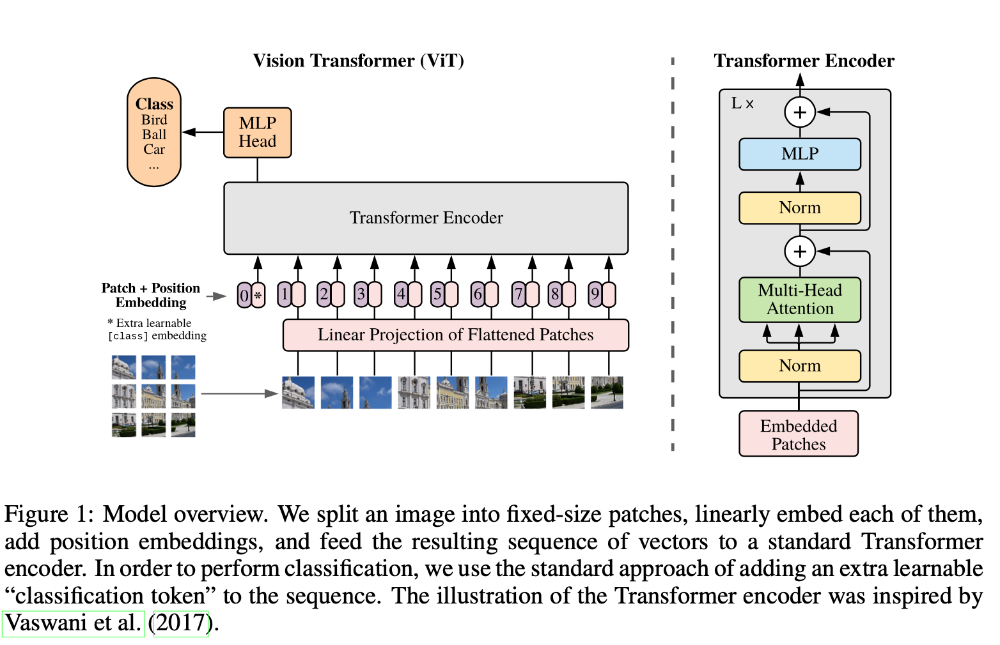
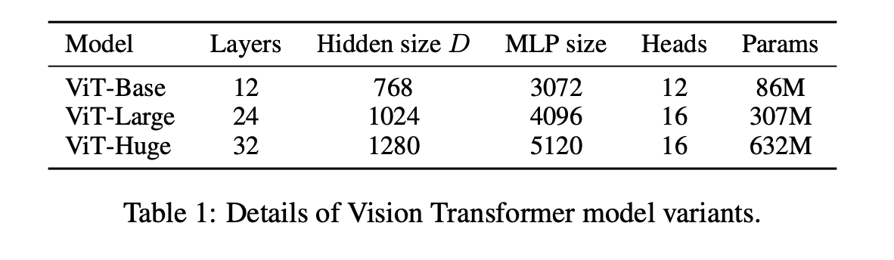
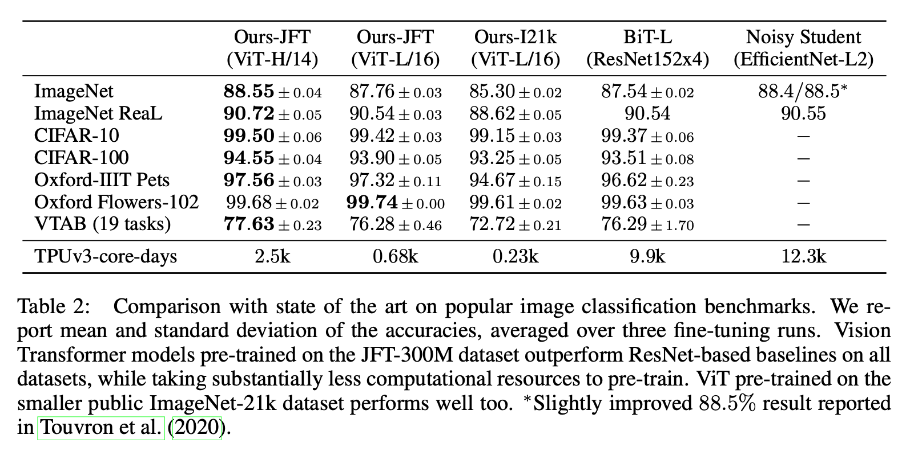

1. Read the title and make an opinion of what’s in the paper (e.g., the area, the task)
Year: 2020
AN IMAGE IS WORTH 16X16 WORDS: TRANSFORMERS FOR IMAGE RECOGNITION AT SCALE
There is certainly creativity employed the the designing of the title.
I know this paper takes the transformer architecture on images in 16x16 patches, so that seems to be the gist here. But, I wonder what ‘At Scale’ means. I probably refers to being useful on the problems we care about.
2. Read the abstract well and form a hypothesis of
- What’s new in the paper?
- Do you have a clear overview about what the paper is all about?
a pure transformer applied directly to sequences of image patches can perform very well on image classification tasks
This is a key contribution the paper adds to the literature.
When pre-trained on large amounts of data and transferred to multiple mid-sized or small image recognition benchmarks (ImageNet, CIFAR-100, VTAB, etc.), Vision Transformer (ViT) attains excellent results compared to state-of-the-art convolutional networks while requiring substantially fewer computational resources to train
I think this is a big “when pre-trained on large amounts of data”. However, the trend is to release these pretrained models, making the Pre-traing->Fine-Tune strategy very viable. They don’t seem to be vying for space in the abstract though, the paper, in my opinion, assumes de-facto control of the vision Transformer landscape.
3. Look at the images and extract a set of “questions” about what is not clear about their method from the images. Now your job is to answer these questions by reading the paper.
So based on the figure, this is actually really easy to understand. The ViT block is not that complicated. What is interesting is how much work went into finding an architecture as such that could compete with CNNs. The real question is what about this setup makes ViTs work when others weren’t?

Above you can see how the ‘*’ token is the embedding that the MLP head is attached to in order to make classification decisions, but a great by-product of the Transformer encoder is the attention maps generally lends some interesting insights in the additional encodings.
A couple of Questions I have:
- How many layers are used?
- Is the Linear Projection just
nn.Embedding?
4. Read the method aiming to answer your “questions” about the paper. Focus on understanding only the things relevant for the story (i.e., to understand the contribution).
It is simple spliting the image into 16x16 pixel patches, projecting those patches, and training a vanilla Transformer on top of that. All quite simple. The point out that even the positional embeddings need to be learned (in regards to 2D space).
Wow, and that is it. It is quite simple to explain.
5. Read the experiments to convince you that the show results are caused by their claim. Be aware that the experiments highlighted are the best scenarios and are fully hyper-parameter tuned.
When considering the computational cost of pre-training the model, ViT performs very favourably, attaining state of the art on most recognition benchmarks at a lower pre-training cost.
They explain they are using a number of pretraining sets: Imagenet original and ImageNet021K as well as JFT (another big Image set).
They run 3 variants shown in Table 1.

These results are pretty interesting. They show the Huge model to perform extremely well on a number of tasks, besting other top models, while in terms of pretraining being relatively less. Now speaking of TPUv3-core-days in the thousands is unreachable for the common man; however, seeing these results is compelling.

6. Make sure you answered all your questions. Did the authors convince you that their story has the effect that they claim?
They conclude with a short aside on a masked patch prediction task, like MLM from BERT, and report good yet not competitive results compared to supervised pretraining.
I think they have good results and I think there is great future work being done on the SSL side:
We leave exploration of contrastive pre-training (Chen et al., 2020b; He et al., 2020; Bachman et al., 2019; He ́naff et al., 2020) to future work.